Inicio / Sostenibilidad aplicada al sistema productivo / Tema 4
Material didáctico · Tema 4UT4. Economía verde y circular
Descargar la presentación (PowerPoint, 215 KB)
0. Presentación de la unidad
En esta unidad vamos a mirar cómo se fabrican, se usan y se tiran las cosas, y por qué ese modelo no puede durar. Veremos las alternativas que proponen la economía verde y la economía circular, y aprenderemos dos herramientas que usan las empresas para reducir el impacto de sus productos: el análisis del ciclo de vida y el ecodiseño. Terminaremos con algo muy nuestro como técnicos de SMR: qué hacer con un ordenador cuando deja de servir (RAEE y reacondicionamiento).
Resultado de aprendizaje 4 (RA4). Propone productos y servicios responsables conforme a la economía circular: modelo de producción y consumo actual, principios de economía verde y circular, ecodiseño y ciclo de vida del producto.
| CE | Qué tendrás que saber hacer | Teoría | Práctica | Cómo se evalúa |
|---|---|---|---|---|
| a | Caracterizar el modelo de producción y consumo actual | T1 | P1 | Prueba escrita |
| b | Identificar los principios de la economía verde y circular | T1, T2 | P1, P2 | Prueba escrita |
| c | Contrastar los beneficios de la economía verde y circular frente al modelo clásico | T2 | P2, P3 | Prueba escrita |
| d | Aplicar principios de ecodiseño | T3 | P3 | Caso práctico |
| e | Analizar el ciclo de vida del producto | T3 | P3 | Caso práctico |
| f | Identificar los procesos de producción y los criterios de sostenibilidad aplicados | T3 | P3 | Caso práctico |
Organización de las sesiones
Como en las unidades anteriores, alternamos una hora de teoría (explicación y preguntas flash de 2 minutos) y una hora de práctica (55 minutos de trabajo con un entregable). La última práctica es el caso práctico del RA4.
| Sesión | Tipo | Qué se hace | Producto |
|---|---|---|---|
| T1 | Teoría | Apartado 0, 1 (economía lineal) y 2 (economía verde) | — |
| P1 | Práctica | Taller: la mochila de un ordenador | Ficha P1 |
| T2 | Teoría | Apartado 3 (economía circular) y 4 (beneficios) | — |
| P2 | Práctica | Las 7R en el taller y un negocio circular en el valle | Ficha P2 (lienzo de negocio) |
| T3 | Teoría | Apartado 5 (ciclo de vida), 6 (ecodiseño) y 7 (RAEE) | Comprobación final de 5 minutos |
| P3 | Práctica | Caso práctico: ciclo de vida de un equipo informático | Informe comparativo lineal / circular |
Mapa de la unidad
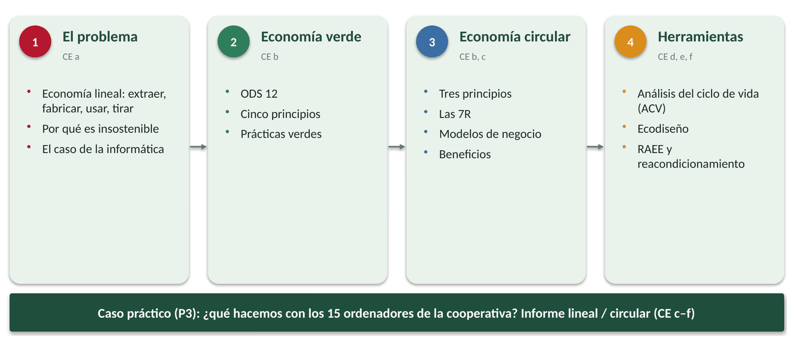
Situación de partida: los 15 ordenadores de la cooperativa
¿Te acuerdas de la cooperativa de cereza de la UT2? Tenía 15 ordenadores de seis años que ya no reciben actualizaciones de Windows 10. Ha pedido presupuesto a Hugo, técnico de SMR que trabaja en una tienda de informática de Cabezuela del Valle.
Hugo tiene tres opciones encima de la mesa:
- Comprar 15 ordenadores nuevos y llevar los viejos al punto limpio.
- Ampliar los equipos (disco SSD y más memoria RAM), instalar un sistema operativo con soporte y seguir usándolos unos años más.
- Alquilar los equipos a una empresa que se encarga del mantenimiento y que se los lleva cuando ya no sirven.
La gerente le pregunta: «¿Qué es lo más sostenible? ¿Y lo más barato?». Al terminar la unidad podrás responderle con datos.
Actividad 0. ¿Qué sabemos ya? (5 minutos, por parejas, al empezar T1)
- ¿Qué crees que pasa con un ordenador cuando lo dejamos en el punto limpio?
- ¿Has comprado o vendido alguna vez algo de segunda mano? ¿Qué?
- De las tres opciones de Hugo, ¿cuál elegirías tú ahora mismo? ¿Por qué?
- Guardad las respuestas: las retomaremos en el caso práctico P3.
1. El modelo de producción y consumo actual: la economía lineal
T1 Sesión teórica T1 (55 min): apartados 0, 1 y 2.
Desde la Revolución Industrial, el modelo de producción y consumo que ha predominado es la economía lineal.
La economía lineal es un sistema en el que los productos siguen un camino de un solo sentido: se extraen los recursos, se fabrican los productos, se consumen y se desechan cuando ya no se usan. Se resume en tres palabras: «usar y tirar».
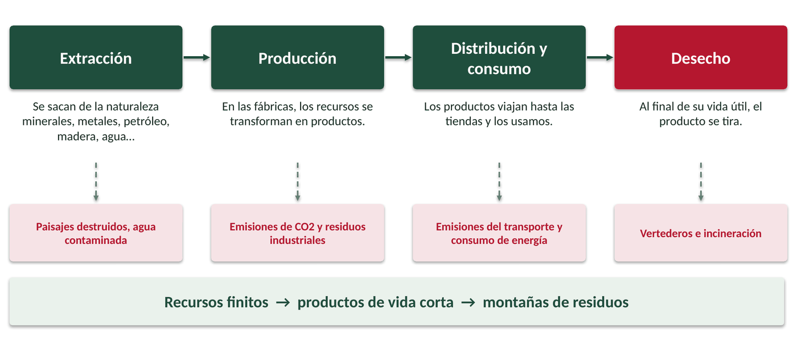
| Fase | Qué ocurre | Ejemplo: un ordenador portátil |
|---|---|---|
| 1. Extracción | Se extraen los recursos naturales necesarios: minerales, metales, petróleo, madera, agua… | Minas de cobre, litio, cobalto, oro o tierras raras; petróleo para los plásticos. |
| 2. Producción | Los recursos se transforman en productos en las fábricas. | Fabricación de chips, pantalla, batería y carcasa, sobre todo en Asia. |
| 3. Distribución y consumo | Los productos se transportan y se ponen a disposición de los consumidores, que los usan. | Viaja en barco o avión hasta la tienda; lo usamos 4 o 5 años. |
| 4. Desecho | Cuando el producto llega al final de su vida útil, se tira. | Acaba en un cajón, en la basura o, en el mejor caso, en un punto limpio. |
1.1. ¿Por qué es insostenible?
El modelo lineal tiene cinco características que lo hacen insostenible a largo plazo:
| Característica | Explicación |
|---|---|
| Agotamiento de los recursos | Necesita extraer grandes cantidades de recursos naturales que son finitos. Si seguimos sobreexplotándolos, terminarán agotándose. |
| Consumismo excesivo | Fomenta un consumo desmedido basado en la cultura de «comprar, usar y tirar». La obsolescencia programada es una de las estrategias para estimular la demanda y acortar la vida de los productos. |
| Generación y gestión ineficiente de residuos | Produce una enorme cantidad de residuos que, en su mayoría, acaban en vertederos o incinerados. No se da prioridad a reutilizar, reparar o reciclar. |
| Impacto ambiental | Su objetivo es maximizar el beneficio sin tener en cuenta el impacto ambiental o social: emisiones de gases de efecto invernadero, contaminación, consumo de agua, energías no renovables… Es uno de los principales responsables del cambio climático. |
| Desigualdad social | Provoca desigualdades y pobreza: explotación laboral, falta de acceso a recursos básicos y reparto desigual de la riqueza entre personas y territorios. |
IDEA CLAVE
No podemos seguir actuando como si los recursos fueran infinitos. Hace falta un modelo de producción y consumo responsable, basado en una economía verde y circular.
En el sector TIC
Un teléfono móvil contiene unos 50 metales diferentes, muchos de ellos escasos o extraídos en zonas en conflicto (como el coltán o el cobalto de la República Democrática del Congo). En el mundo se generaron 62 millones de toneladas de residuos electrónicos en 2022 y solo un 22 % se recogió y recicló de forma documentada (Global E-waste Monitor 2024).
Pregunta flash (2 min)
Piensa en un aparato que hayas tirado o guardado en un cajón. ¿Por qué dejó de usarse: se rompió, se quedó lento o simplemente salió uno mejor?
2. Economía verde
La Agenda 2030 recoge en el ODS 12 «Producción y consumo responsables» el objetivo de garantizar modalidades de producción y consumo sostenibles. Se trata de aprovechar mejor los recursos y de desvincular el crecimiento económico de la degradación del medioambiente.
| Metas del ODS 12 (resumidas) | |
|---|---|
| 1. Aplicar programas de consumo y producción sostenibles | 7. Promover compras públicas sostenibles |
| 2. Lograr un uso eficiente de los recursos naturales | 8. Educar para el desarrollo sostenible |
| 3. Reducir a la mitad el desperdicio de alimentos | 9. Ayudar a los países en desarrollo en ciencia y tecnología sostenible |
| 4. Gestionar racionalmente desechos y productos químicos | 10. Lograr un turismo sostenible que cree empleo y promueva lo local |
| 5. Reducir residuos: prevención, reducción, reciclado y reutilización | 11. Reducir los subsidios a los combustibles fósiles |
| 6. Animar a las empresas a adoptar prácticas sostenibles |
Un modelo de producción y consumo responsable se apoya en dos ideas relacionadas pero no iguales: la economía verde (enfoque amplio) y la economía circular (centrada en los recursos y los residuos).
2.1. ¿Qué es la economía verde?
El Programa de la ONU para el Medio Ambiente (PNUMA) define la economía verde como «aquella que mejora el bienestar humano y la equidad social a la vez que reduce los riesgos ambientales y la escasez ecológica».
Tiene tres rasgos: es baja en carbono, usa los recursos de forma eficiente y es socialmente incluyente. Busca el equilibrio entre lo económico, lo social y lo ambiental.
IDEA CLAVE
La economía verde es una economía al servicio de la vida: pone a las personas y al medioambiente en primer lugar.
2.2. Los cinco principios de la economía verde
La Green Economy Coalition, una alianza de ONG, empresas e instituciones respaldada por la ONU, la OCDE y la OIT, propone cinco principios:
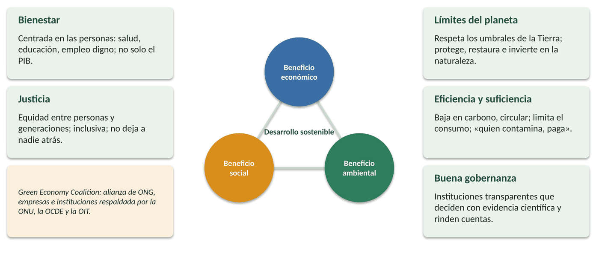
| Principio | Qué significa | Ejemplo |
|---|---|---|
| Bienestar | Se centra en las personas. La economía no se mide solo con el PIB, sino también con la salud, la educación, la seguridad o la calidad ambiental. Ofrece empleos verdes y dignos. | Un ayuntamiento invierte en fibra óptica y formación digital para que todos los vecinos puedan teletrabajar. |
| Justicia | Promueve la equidad dentro de una generación y entre generaciones. Es inclusiva, no discrimina, apoya a las pymes y no deja a nadie atrás. | Programas que donan ordenadores reacondicionados a familias sin recursos. |
| Límites del planeta | Respeta los umbrales de la Tierra (clima, agua, biodiversidad…). Protege, restaura e invierte en la naturaleza. | Una cooperativa recupera bancales abandonados y protege las gargantas del valle. |
| Eficiencia y suficiencia | Es baja en carbono, ahorra recursos y es circular. Reconoce que hay que limitar el consumo. Aplica «quien contamina, paga». | Impuestos a las emisiones de CO2; virtualizar servidores en lugar de comprar más. |
| Buena gobernanza | Instituciones responsables y transparentes que deciden con evidencia científica, rinden cuentas y permiten la participación ciudadana. | Un portal de transparencia que publica el consumo energético de los edificios municipales. |
2.3. Prácticas de economía verde
- Turismo sostenible: minimiza el impacto ambiental y social y respeta la cultura local (por ejemplo, el turismo rural del valle bien gestionado).
- Agricultura ecológica: sin productos químicos de síntesis.
- Movilidad sostenible, energías renovables y eficiencia energética.
- Impuestos a las emisiones de carbono.
- Conservación y restauración de la biodiversidad y los ecosistemas.
- Condiciones laborales dignas para las personas trabajadoras.
Pregunta flash (2 min)
Verdadero o falso: «La economía verde solo se preocupa por el medioambiente». Justifícalo en una frase.
Ver solución
falso; busca a la vez beneficio económico, social y ambiental.
En la práctica P1 analizaremos la «mochila» de un ordenador y relacionaremos acciones reales con las metas del ODS 12 y los principios de la economía verde.
3. Economía circular
T2 Sesión teórica T2 (55 min): apartados 3 y 4.
La economía verde tiene un enfoque amplio (emisiones, biodiversidad, justicia, inclusión…). La economía circular contribuye a ella centrándose en una parte concreta: usar mejor los recursos materiales y reducir los residuos.
Según la Unión Europea, la economía circular es «un sistema económico donde el valor de los productos, materiales y demás recursos dura el mayor tiempo posible, potenciando su uso eficiente en la producción y el consumo, reduciendo así el impacto ambiental y reduciendo al mínimo los residuos y la liberación de sustancias peligrosas en todas las fases del ciclo de vida».
Dicho de forma sencilla: en la economía circular también se extraen materias primas, se fabrica y se usa, pero los materiales de los residuos se recuperan y vuelven a entrar en el proceso productivo. El residuo de hoy es la materia prima de mañana.
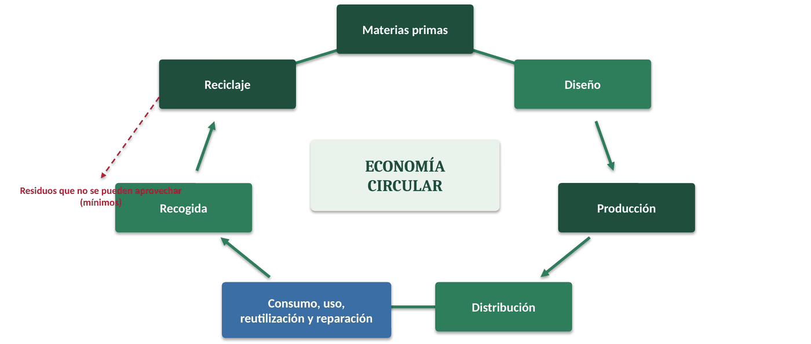
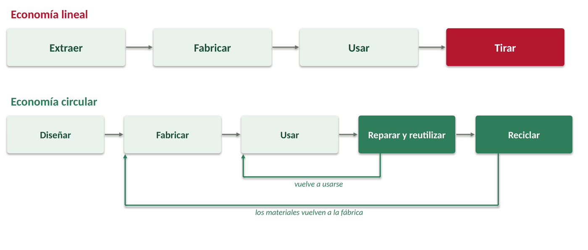
La Estrategia Española de Economía Circular «España Circular 2030»
- Reducir un 30 % el consumo nacional de materiales en relación con el PIB (respecto a 2010).
- Reducir un 15 % la generación de residuos (respecto a 2010).
- Reducir el desperdicio alimentario: un 50 % en hogares y comercio, un 20 % en producción y suministro.
- Llegar al 10 % de reutilización y preparación para la reutilización de los residuos municipales.
- Mejorar un 10 % la eficiencia en el uso del agua.
- Bajar las emisiones de gases de efecto invernadero por debajo de 10 millones de toneladas de CO2 equivalente.
3.1. Los tres principios de la economía circular
Según la Fundación Ellen MacArthur, la organización de referencia en la materia (Premio Princesa de Asturias de Cooperación Internacional 2022), la economía circular se basa en el diseño y en tres principios:
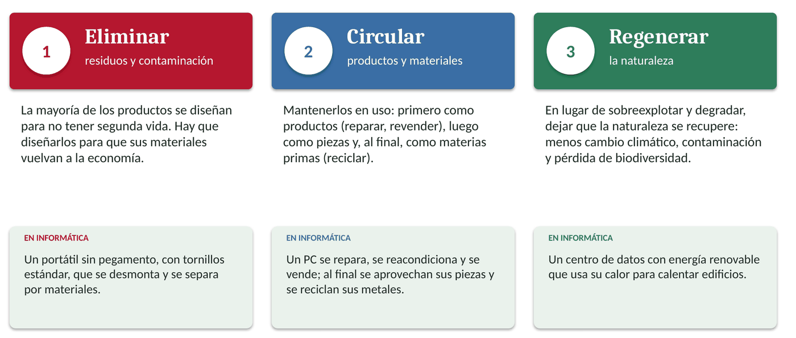
| Principio | Qué significa | Ejemplo TIC |
|---|---|---|
| 1. Eliminar residuos y contaminación | La mayoría de los productos están diseñados para no tener una segunda vida. Con un buen diseño se puede eliminar el concepto de residuo: los materiales deben poder volver a la economía al terminar su uso. | Diseñar un portátil sin pegamento, con tornillos estándar, para poder desmontarlo y separar sus materiales. |
| 2. Circular productos y materiales (a su máximo valor) | Mantener los bienes en uso: primero como productos (mantenimiento, reparación, reventa); después como componentes; y, como último recurso, como materias primas (reciclaje). El reciclaje es lo último porque se pierde el valor del producto, pero es imprescindible. | Un ordenador se repara, luego se reacondiciona y se vende de segunda mano; al final, se aprovechan sus piezas y se reciclan sus metales. |
| 3. Regenerar la naturaleza | En lugar de sobreexplotar y degradar la naturaleza, se le permite regenerarse. Así se combaten el cambio climático, la contaminación, la escasez de recursos o la pérdida de biodiversidad. | Un centro de datos que usa energía renovable y aprovecha su calor residual para calefacción. |
3.2. Las 7R de la economía circular
Las tres R clásicas del consumo ecológico (reducir, reutilizar y reciclar) se han ampliado hasta las 7R. Están ordenadas por prioridad: las primeras evitan el residuo; la última solo lo aprovecha.
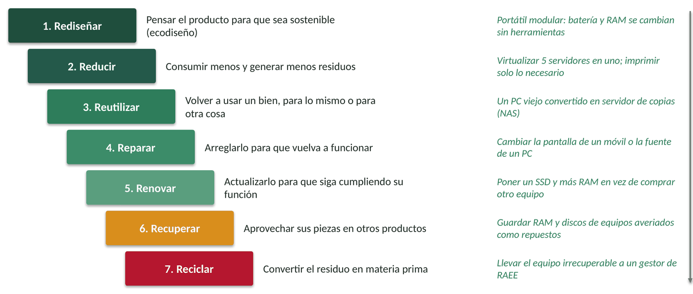
| R | Qué significa | Ejemplo en informática |
|---|---|---|
| Rediseñar | Pensar el producto y su ciclo de vida para hacerlo más sostenible (materiales, procesos, envases). Es el ecodiseño. | Portátiles modulares en los que se cambian la batería, la RAM o el teclado sin herramientas especiales. |
| Reducir | Consumir menos productos y materiales y generar menos residuos; ahorrar agua y energía. | Imprimir solo lo necesario; virtualizar 5 servidores en uno; activar la suspensión automática. |
| Reutilizar | Volver a usar un bien para el mismo fin o para otro distinto. Alarga su vida útil. | Un PC antiguo convertido en servidor de archivos (NAS) o en router con software libre. |
| Reparar | Arreglar un objeto para que vuelva a funcionar antes de tirarlo y comprar otro. | Cambiar la pantalla rota de un móvil o la fuente de alimentación de un PC. |
| Renovar | Actualizar objetos antiguos o usados para que vuelvan a cumplir su función. | Cambiar el disco duro por un SSD y ampliar la RAM en lugar de comprar un equipo nuevo. |
| Recuperar | Aprovechar piezas de productos que ya no sirven para fabricar o reparar otros. | Guardar la RAM, los discos y las fuentes de equipos averiados como repuestos. |
| Reciclar | Transformar los desechos en materias primas para fabricar otros productos. | Llevar los equipos irrecuperables a un gestor de RAEE para recuperar cobre, oro o aluminio. |
IDEA CLAVE
Cuanto más arriba en la lista de las 7R, menos recursos se gastan. Reciclar está bien, pero es la última opción.
Pregunta flash (2 min)
Instalar Linux en un portátil de 2015 para que lo use tu abuela, ¿qué R es? ¿Puede ser más de una?
Ver solución
renovar; también reutilizar si cambia de usuario o de uso.
3.3. Modelos de negocio basados en la economía circular
La preocupación creciente de la sociedad por el medioambiente abre nuevas oportunidades de negocio. Estos son los cinco modelos principales:
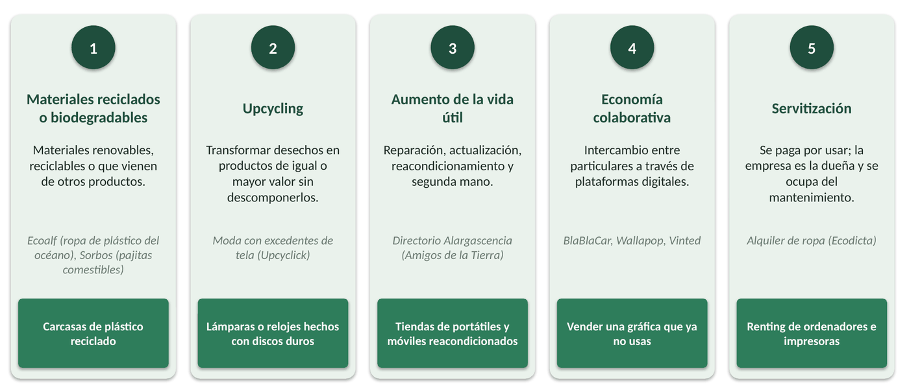
| Modelo | En qué consiste | Ejemplos |
|---|---|---|
| Materiales reciclables, biodegradables y reciclados | Usar materiales renovables, reciclables o biodegradables, o incorporar materiales que vienen de otros productos. | Ecovative (embalajes de hongos), Sorbos (pajitas comestibles), Ecoalf (ropa de plástico del océano). En TIC: carcasas de plástico reciclado. |
| Upcycling o suprarreciclaje | Transformar objetos o materiales desechados en productos de igual o mayor valor, sin descomponerlos. | Moda con excedentes de tela (Upcyclick). En TIC: lámparas o relojes hechos con discos duros y placas base. |
| Aumento de la vida útil | Negocios de reparación, actualización, reacondicionamiento (refurbishing) y segunda mano. | Talleres de reparación; tiendas de móviles y portátiles reacondicionados; directorio Alargascencia de Amigos de la Tierra. |
| Economía colaborativa (P2P) | Intercambio de bienes y servicios entre particulares, normalmente a través de plataformas digitales. | BlaBlaCar, Wallapop, Vinted. |
| Servitización | El cliente paga por usar un producto, no por comprarlo. La empresa conserva la propiedad y se ocupa del mantenimiento, la reparación y la recogida. | Alquiler de ropa (Ecodicta). En TIC: renting de ordenadores e impresoras con mantenimiento incluido. |
¿Por qué la servitización es circular?
Si la empresa cobra por el uso y sigue siendo la dueña del aparato, le interesa que dure mucho y se repare fácilmente: cada avería es un gasto para ella. Con la venta tradicional ocurre lo contrario: cuanto antes se cambie el aparato, más vende.
4. Beneficios de la economía verde y circular
Frente al modelo lineal, la economía verde y circular aporta beneficios en tres ámbitos: ambiental, económico y social.
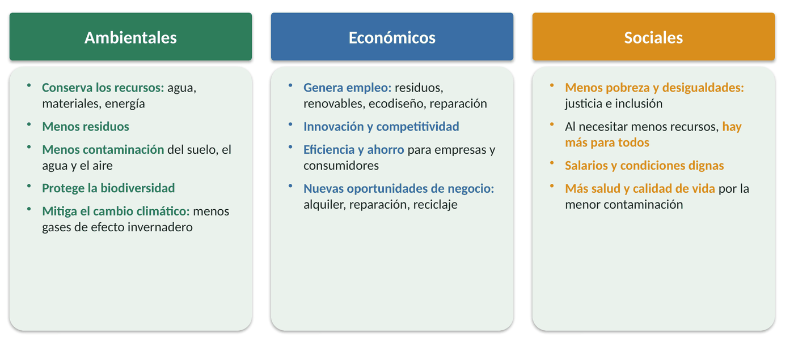
| Ámbito | Beneficio | Explicación |
|---|---|---|
| Ambiental | Conservación de los recursos naturales | Se aprovechan mejor los materiales, el agua y la energía; se evita su sobreexplotación y agotamiento. |
| Minimización de residuos | Se genera menos basura. | |
| Menos contaminación | Se reduce el impacto sobre el suelo, el agua y el aire. | |
| Conservación de la biodiversidad | Al extraer menos y contaminar menos, se protegen los ecosistemas. | |
| Mitigación del cambio climático | Las prácticas sostenibles y las renovables reducen los gases de efecto invernadero. | |
| Económico | Generación de empleo | En gestión de residuos, renovables, ecodiseño, reparación, reacondicionamiento… |
| Innovación y competitividad | Las empresas innovan para ser más sostenibles y eso las hace más competitivas. | |
| Eficiencia y ahorro | Se consume menos energía, agua y materiales: ahorran empresas y consumidores. | |
| Nuevas oportunidades de negocio | Renovables, reciclaje, alquiler o reparación en lugar de venta… | |
| Social | Menos pobreza y desigualdades | Busca la justicia y la inclusión; al necesitar menos recursos, hay más disponibles para todos; salarios dignos. |
| Salud y calidad de vida | Menos contaminación, mejor acceso a agua o electricidad, estilos de vida más saludables. |
En el Valle del Jerte
La economía circular no es nueva en el campo: la cereza que no sirve para venderse en fresco se transforma en mermeladas, licores o confituras; los restos de poda se pueden triturar como abono o aprovechar como biomasa; y muchos pueblos mantienen la costumbre de reparar y reutilizar. El reto es aplicar esa misma lógica a la tecnología.
Pregunta flash (2 min)
Di un beneficio económico de reacondicionar los 15 ordenadores de la cooperativa y uno social.
Ver solución
económico, ahorro frente a comprar nuevos o empleo local de reparación; social, equipos asequibles, donación a familias o menos contaminación.
En la práctica P2 clasificaremos tareas del taller según las 7R y diseñaremos en grupo un negocio circular para la comarca.
5. Análisis del ciclo de vida (ACV)
T3 Sesión teórica T3 (55 min): apartados 5, 6 y 7.
Todo lo que compramos tiene un impacto ambiental, y ese impacto no se produce solo cuando lo tiramos: aparece en todas las fases de su vida. Para medirlo, las empresas usan una herramienta: el análisis del ciclo de vida.
El análisis del ciclo de vida (ACV) es una metodología que analiza y evalúa los impactos ambientales de un producto, proceso o servicio durante todas las etapas de su vida, con el objetivo de aplicar estrategias para reducirlos.
5.1. Etapas del ciclo de vida de un producto
| Etapa | Qué incluye |
|---|---|
| 1. Obtención de materias primas | Extracción y adquisición de materias primas, incluido su transporte hasta la fábrica. |
| 2. Producción | Transformación de materias primas y energía en el producto final. |
| 3. Distribución | Comercialización, logística y transporte del producto hasta el cliente. |
| 4. Uso y mantenimiento | Utilización, reparación, reutilización y mantenimiento durante su vida útil. |
| 5. Final de vida | Cuando ya no sirve, el producto se recicla o termina en un vertedero o una incineradora. |
En cada etapa hay entradas (materias primas, energía, agua) y salidas (emisiones de gases, vertidos, residuos, calor). Esas entradas y salidas son las que causan los impactos ambientales.
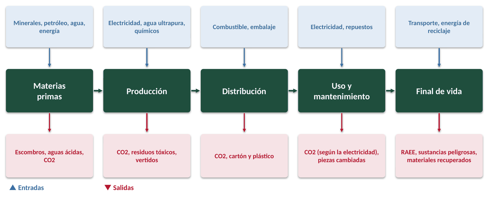
Los impactos se agrupan en categorías de impacto. Algunas de las más usadas son:
- Calentamiento global: emisión de gases de efecto invernadero. Se mide en kg de CO2 equivalente (kg CO2 eq.).
- Acidificación del suelo y del agua, causada también por la emisión de gases.
- Eutrofización: crecimiento excesivo de algas en el agua por el exceso de fertilizantes y detergentes, que agota el oxígeno.
- Reducción de la capa de ozono, que nos protege de la radiación ultravioleta.
- Consumo de materias primas y de energía; agotamiento del agua o de los combustibles fósiles.
- Toxicidad para el suelo o el agua.
¿Dónde contamina más un ordenador?
En un portátil o un PC de oficina, la mayor parte de la huella de carbono (en torno a tres cuartas partes, según los informes de los fabricantes) se genera al fabricarlo, no al usarlo. Por eso alargar su vida útil es una de las medidas más eficaces: cada año extra reparte esa huella de fabricación entre más años de uso.
5.2. Tipos de análisis según su alcance
No todos los ACV estudian el ciclo completo. Según dónde empiezan y dónde terminan, hay cuatro tipos:
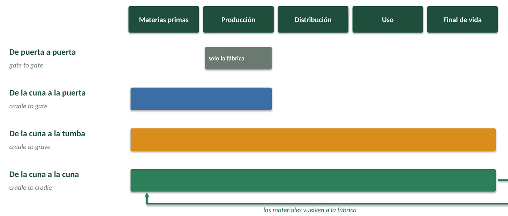
| Tipo | Qué analiza |
|---|---|
| De puerta a puerta (gate to gate) | Solo lo que ocurre dentro de la fábrica, desde que llegan las materias primas hasta que termina la fabricación. Es insuficiente. |
| De la cuna a la puerta (cradle to gate) | Desde la extracción de materiales hasta el final del proceso productivo (el producto sale de la fábrica). |
| De la cuna a la tumba (cradle to grave) | El ciclo completo: desde la extracción hasta el final de su vida útil, incluida la gestión de sus residuos. |
| De la cuna a la cuna (cradle to cradle) | Basado en la economía circular: al final de su vida, los productos y materiales se recuperan o reciclan y vuelven al proceso productivo. |
5.3. Metodología del ACV
Las normas ISO 14040 (principios y marco) e ISO 14044 (requisitos y directrices) establecen que un ACV tiene cuatro fases. No son estrictamente lineales: se puede volver atrás y la interpretación se hace de forma continua.
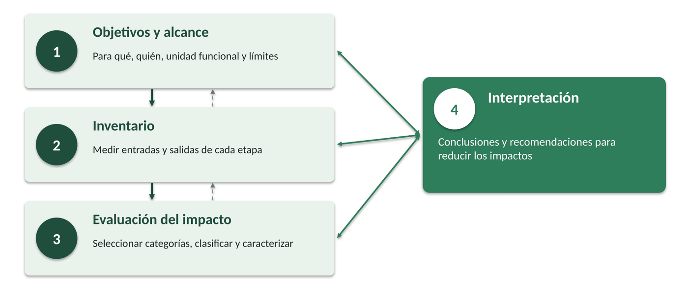
Fase 1. Definición de objetivos y alcance
En los objetivos se indica quién hace el estudio, por qué, para qué se usará (ecodiseño, etiquetado ambiental, compra verde, políticas públicas…) y a quién va dirigido. En el alcance se definen:
- El sistema: el producto y todo lo que necesita durante su vida (en un coche, también neumáticos, combustible, aceite…).
- La unidad funcional: una medida que representa la función del producto y permite comparar opciones distintas. Por ejemplo, para comparar una bolsa de plástico de 5 kg con una de tela de 10 kg, la unidad funcional puede ser «transportar 10 kg» (dos bolsas de plástico o una de tela).
- Los límites del sistema: qué etapas se incluyen (de la cuna a la tumba, de la cuna a la puerta…) y otros límites temporales o geográficos.
Unidad funcional en informática
Para comparar «comprar un PC nuevo cada 4 años» con «ampliar el mismo PC y usarlo 8 años», la unidad funcional no puede ser «un ordenador»: debe ser algo como «un puesto de trabajo de oficina funcionando durante 8 años». Es la que usaremos en el caso práctico P3.
Fase 2. Análisis del inventario
Se cuantifican y registran las entradas (energía en kWh, materiales en kg, agua en litros) y las salidas (emisiones, residuos, vertidos) de cada etapa, tomando como referencia la unidad funcional. Ayuda dibujar un diagrama de flujo. Los datos pueden ser primarios (medidos en el propio proceso) o secundarios (estadísticas y bases de datos).
Fase 3. Evaluación del impacto
Se calcula qué efecto tienen esas entradas y salidas sobre el medioambiente, en tres pasos obligatorios:
- Selección de las categorías de impacto y sus indicadores (por ejemplo, calentamiento global en kg CO2 eq.; agotamiento del agua en litros).
- Clasificación: se asigna cada entrada o salida a su categoría (el CO2 y el metano, a calentamiento global).
- Caracterización: se multiplica cada sustancia por un factor que indica cuánto contribuye respecto a la sustancia de referencia.
| Sustancia emitida | Cantidad | Factor | Resultado |
|---|---|---|---|
| Dióxido de carbono (CO2) | 50 kg | × 1 | 50 kg CO2 eq. |
| Metano (CH4) | 1 kg | × 21 | 21 kg CO2 eq. |
| Total calentamiento global | 71 kg CO2 eq. |
Ejemplo del libro. El factor 21 para el metano es el que usa el libro; los informes más recientes del IPCC lo sitúan en torno a 28.
Fase 4. Interpretación de resultados
Se sacan conclusiones y recomendaciones para reducir los impactos. Por ejemplo, en el libro la empresa Carracebo compara dos modelos de un producto: el fabricado con materias primas vírgenes emite 17,1 kg CO2 eq. y el fabricado con materiales reciclados 5,24 kg CO2 eq., un 69 % menos, sobre todo gracias a la fase de materias primas.
Como el ACV es complejo, lo hacen profesionales con software especializado (SimaPro, GaBi) y bases de datos de impactos.
Pregunta flash (2 min)
¿Qué unidad funcional usarías para comparar una bombilla LED con una incandescente?
Ver solución
por ejemplo, «iluminar con la misma cantidad de luz durante 10 000 horas».
6. Ecodiseño
La norma ISO 14006 define el ecodiseño (o diseño verde) como un enfoque que tiene en cuenta los aspectos ambientales en el diseño y desarrollo del producto, con el objetivo de reducir sus impactos ambientales a lo largo de todo su ciclo de vida.
Se estima que alrededor del 80 % del impacto ambiental de un producto se decide en su fase de diseño. Si se diseña mal, ese impacto será difícil de evitar después.
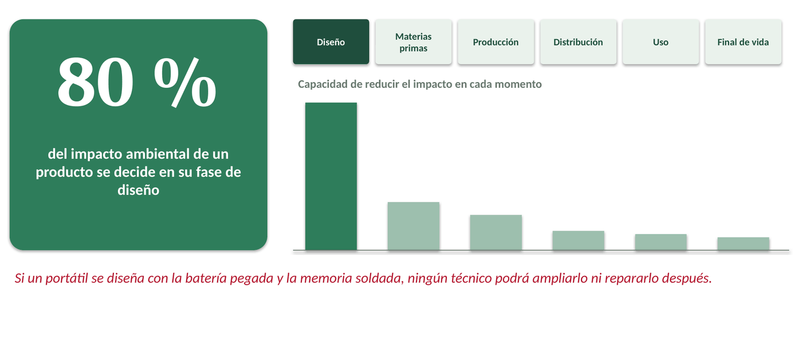
El ecodiseño interesa a las empresas porque muchas veces lo exige la normativa, pero también porque les da ventaja competitiva: cada vez más clientes piden productos respetuosos con el medioambiente. Las empresas que lo aplican pueden obtener el certificado ISO 14006 a través de entidades acreditadas por ENAC (como AENOR o Bureau Veritas).
6.1. Principios del ecodiseño
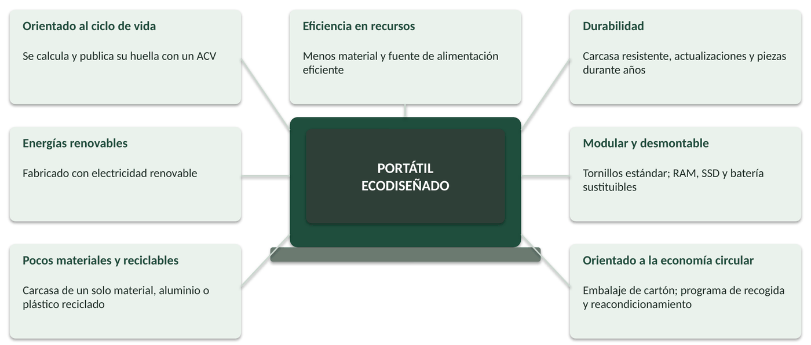
| Principio | Qué significa | Ejemplo |
|---|---|---|
| Orientado al ciclo de vida | Tiene en cuenta todas las etapas, desde la extracción hasta el final de vida, usando el ACV. | El fabricante calcula y publica la huella de carbono de cada modelo. |
| Eficiencia en el uso de recursos | Minimizar materiales y energía sin perder funcionalidad ni durabilidad. | Fuentes de alimentación eficientes (80 PLUS); menos embalaje. |
| Durabilidad | Productos duraderos y de calidad, fáciles de reparar; evitar la obsolescencia programada. | Slow fashion frente a fast fashion; portátiles con 7 años de actualizaciones y piezas. |
| Energías renovables | Priorizar las renovables en todas las fases. | Fábricas y centros de datos con electricidad 100 % renovable. |
| Diseño modular y desmontable | Que se pueda desmontar fácilmente para reparar, recuperar o reciclar; módulos sustituibles; materiales bien identificados. | Muebles IKEA desmontados; móviles y portátiles modulares como Fairphone o Framework. |
| Un solo material y materiales biodegradables | Usar una sola materia prima simplifica la producción y el reciclaje; los biodegradables se descomponen sin dañar el medio. | Utensilios de bambú; embalajes de cartón sin plásticos. |
| Orientado a la economía circular | Que fomente reutilizar, recuperar y reciclar. En envases: componentes separables, que quepan en el contenedor, materiales compatibles, etiquetas de menos de 2/3 del envase y sin colores oscuros. | Cajas de cartón plegables con el símbolo de reciclaje. |
Ecodiseño en los equipos informáticos: qué mirar
- Reparabilidad: tornillos estándar (no pegamento), RAM y SSD en zócalo (no soldados), batería sustituible, manual de reparación y piezas disponibles.
- Ecoetiquetas TIC: EPEAT, TCO Certified, Energy Star, Etiqueta Ecológica de la UE.
- Normativa europea: el Reglamento de Ecodiseño para Productos Sostenibles (UE) 2024/1781 introduce el pasaporte digital de producto; desde junio de 2025, móviles y tabletas deben tener baterías más duraderas, piezas de recambio durante 7 años y una etiqueta con su clase de reparabilidad.
6.2. ¿Cómo se aplica el ecodiseño en cada fase?
| Fase | Criterios de sostenibilidad |
|---|---|
| Obtención de materias primas | Materiales poco tóxicos, duraderos, reparables, reciclables o biodegradables; extracción eficiente y en condiciones laborales dignas; materias primas cercanas (menos transporte). |
| Producción | Uso eficiente de materias primas y menos residuos; ahorro de agua y energía; energías renovables; buenas condiciones laborales; reutilizar los desechos del propio proceso; innovación. |
| Comercialización y distribución | Productos más ligeros y compactos para el transporte; menos embalaje y reciclable; logística eficiente; marketing ecológico. |
| Uso | Calidad, seguridad y durabilidad; bajo consumo de energía y agua; fácil reparación, mantenimiento y actualización. |
| Después del uso | Reutilización, recuperación y reciclaje del producto y de sus materiales. |
Pregunta flash (2 min)
Mira el portátil o el móvil que tienes delante. ¿Podrías cambiarle tú la batería? ¿Qué principio del ecodiseño cumple o incumple?
7. Final de vida de los equipos: RAEE y reacondicionamiento
Como técnicos de SMR, muchas veces seremos nosotros quienes decidamos qué hacer con un equipo viejo. Este apartado amplía el libro con lo que necesitamos saber para hacerlo bien.
7.1. ¿Qué es un RAEE?
Un RAEE (residuo de aparato eléctrico y electrónico) es cualquier aparato que funciona con electricidad o pilas y del que su dueño se desprende: ordenadores, móviles, impresoras, cables, cargadores, televisores, electrodomésticos…
Los RAEE son un residuo especial por dos motivos:
- Contienen sustancias peligrosas: mercurio, plomo, cadmio, retardantes de llama bromados, gases refrigerantes… Si se tiran a la basura o se desmontan sin control, contaminan el suelo, el agua y el aire.
- Contienen materiales valiosos: oro, plata, cobre, paladio, aluminio, tierras raras… Se dice que son una «mina urbana»: una tonelada de placas de móvil contiene mucho más oro que una tonelada de mineral de una mina.
En España los regula el Real Decreto 110/2015 sobre RAEE. Lo más importante para nosotros:
- Llevan el símbolo del contenedor de basura tachado: no se pueden tirar al contenedor de restos.
- Se entregan en el punto limpio o en la tienda. Al comprar un aparato nuevo, la tienda debe recoger gratis el viejo equivalente (uno por uno). Las tiendas grandes (más de 400 m² dedicados a aparatos eléctricos) deben recoger gratis los aparatos muy pequeños (menos de 25 cm) aunque no compres nada (uno por cero).
- Los fabricantes pagan la gestión de los residuos de lo que venden (responsabilidad ampliada del productor).
7.2. El camino correcto de un ordenador viejo
Antes de convertir un equipo en residuo, hay que agotar las opciones de las 7R, siguiendo un orden:
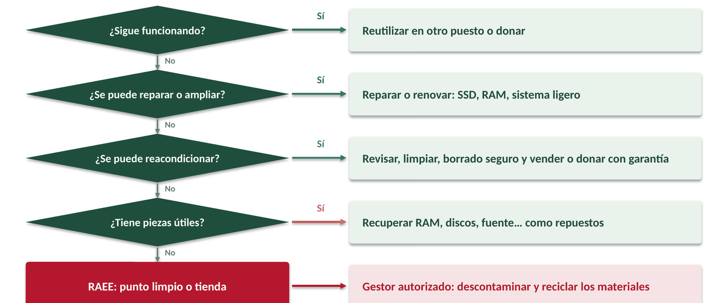
- ¿Sigue funcionando? Reutilizarlo en otro puesto con menos exigencias o donarlo.
- ¿Se puede reparar o ampliar? Cambiar la pieza averiada, poner un SSD, ampliar la RAM, instalar un sistema operativo ligero.
- Reacondicionar: revisar, limpiar, sustituir piezas, borrar los datos de forma segura y venderlo o donarlo con garantía.
- Recuperar piezas útiles para reparar otros equipos.
- Solo si nada de lo anterior es posible: entregarlo como RAEE a un gestor autorizado.
7.3. Reacondicionamiento y borrado seguro
Un equipo reacondicionado es un aparato usado que un profesional ha revisado, reparado si hacía falta, limpiado y probado para venderlo de nuevo con garantía. En España, los productos reacondicionados vendidos por un profesional tienen garantía (como mínimo un año).
Paso imprescindible: el borrado seguro de datos
Un disco que se va a reutilizar puede contener datos personales de la empresa o de clientes. Formatear no basta: los datos se pueden recuperar. Hay que usar un borrado seguro (sobrescritura del disco o el borrado seguro del propio SSD, siguiendo guías como NIST SP 800-88) o, si el disco no se va a reutilizar, destruirlo físicamente. Es una exigencia del RGPD y una tarea típica del técnico de SMR.
7.4. ¿Qué pasa en una planta de RAEE?
- Recogida y transporte desde puntos limpios y tiendas.
- Descontaminación: se retiran baterías, pilas, cartuchos, condensadores y otros componentes peligrosos.
- Desmontaje y trituración.
- Separación de materiales con imanes, corrientes de Foucault, separación por densidad…
- Recuperación: los metales (hierro, aluminio, cobre, metales preciosos) y los plásticos vuelven a la industria como materias primas.
IDEA CLAVE
El mejor RAEE es el que no se genera: primero reutilizar, reparar y reacondicionar; reciclar, al final y siempre a través de un gestor autorizado.
Comprobación de T3 (5 minutos, al final de la sesión)
- Ordena de más a menos prioritario: reciclar, reparar, reutilizar, recuperar piezas, reacondicionar.
- ¿En qué etapa del ciclo de vida se genera la mayor parte de la huella de carbono de un portátil?
- ¿Qué tipo de ACV incluye el reciclaje y la vuelta de los materiales a la fábrica?
- Nombra dos cosas que mirarías en un portátil para saber si está ecodiseñado.
- ¿Basta con formatear un disco antes de donar un ordenador? ¿Por qué?
Ver solución
1) reutilizar, reparar, reacondicionar, recuperar piezas, reciclar. 2) En la obtención de materias primas y la fabricación. 3) De la cuna a la cuna. 4) Por ejemplo: RAM y SSD sustituibles, tornillos estándar, batería extraíble, ecoetiqueta, piezas y manual disponibles. 5) No: los datos se pueden recuperar; hay que hacer un borrado seguro o destruir el disco.
8. Sesiones prácticas
Cada práctica tiene su ficha de trabajo (documento aparte) con espacios para responder y una tabla de tiempos. Aquí se resume qué se hace en cada una.
P1. Taller: la mochila de un ordenador (tras T1)
CE a, b · 55 minutos · por parejas · Entregable: ficha P1 completada.
| Tiempo | Actividad |
|---|---|
| 5 min | Repaso: ¿qué es la economía lineal? ¿y la verde? |
| 15 min | A. El viaje lineal de un ordenador del aula. Mirar la etiqueta del equipo (marca, modelo, país de fabricación) y completar las 4 fases de la economía lineal. |
| 20 min | B. ¿De qué está hecho? Con la tabla de componentes y materiales, localizar en un mapa de dónde vienen y explicar qué es la «mochila ecológica». |
| 10 min | C. Economía verde y ODS 12. Relacionar seis acciones con las metas del ODS 12 y los principios de la economía verde; verdadero o falso. |
| 5 min | Puesta en común y entrega en Classroom. |
P2. Las 7R en el taller y un negocio circular en el valle (tras T2)
CE b, c · 55 minutos · grupos de 3-4 · Entregable: ficha P2 con el lienzo de negocio.
| Tiempo | Actividad |
|---|---|
| 15 min | A. Las 7R en el taller de informática. Clasificar 10 tareas reales de un técnico según la R que aplican. |
| 30 min | B. Un negocio circular en el valle. Elegir uno de los cinco modelos de negocio circular y diseñar una idea para la comarca relacionada con la informática. Completar el lienzo: problema, servicio, clientes, R que aplica, beneficios frente al modelo lineal, riesgos. |
| 10 min | Presentación relámpago: 1 minuto por grupo. |
P3. Caso práctico del RA4: ciclo de vida de un equipo informático (tras T3)
CE c, d, e, f · 55 minutos + entrega en Classroom · grupos de 3 · Producto: informe comparativo economía lineal / circular.
Volvemos a la situación de partida: Hugo tiene que recomendar a la cooperativa qué hacer con sus 15 ordenadores. Con los datos de la ficha, cada grupo:
| Tiempo | Tarea |
|---|---|
| 10 min | 1. Ciclo de vida del equipo: describir las 5 etapas con sus entradas y salidas. |
| 15 min | 2. Comparar escenarios con la unidad funcional «un puesto de trabajo durante 8 años»: lineal (PC nuevo cada 4 años) frente a circular (ampliar y alargar a 8 años). Calcular kg CO2 eq. y euros. |
| 10 min | 3. Ecodiseño: puntuar la reparabilidad de un equipo real del aula con una lista de comprobación. |
| 5 min | 4. Fin de vida: decidir el destino de tres equipos con el árbol de decisión del apartado 7. |
| 15 min | 5. Conclusiones: redactar la recomendación a la cooperativa (se termina en Classroom). |
Se evalúa con la rúbrica incluida en la ficha P3 (40 % de la nota del RA4 corresponde a casos prácticos, según la programación).
9. Resumen, glosario y autoevaluación
9.1. Ideas clave
- La economía lineal sigue el camino extraer → fabricar → usar → tirar. Agota recursos, fomenta el consumismo, genera residuos, contamina y aumenta las desigualdades.
- La economía verde mejora el bienestar y la equidad reduciendo los riesgos ambientales. Sus principios: bienestar, justicia, límites del planeta, eficiencia y suficiencia, y buena gobernanza.
- La economía circular mantiene el valor de productos y materiales el mayor tiempo posible. Sus principios: eliminar residuos, circular productos y materiales, y regenerar la naturaleza.
- Las 7R, por orden de prioridad: rediseñar, reducir, reutilizar, reparar, renovar, recuperar y reciclar.
- Modelos de negocio circulares: materiales reciclados o biodegradables, upcycling, aumento de la vida útil, economía colaborativa y servitización.
- Beneficios ambientales, económicos y sociales frente al modelo lineal.
- El ACV mide el impacto en todas las etapas (materias primas, producción, distribución, uso y final de vida) en cuatro fases: objetivos y alcance, inventario, evaluación del impacto e interpretación.
- El ecodiseño incorpora criterios ambientales desde el diseño, donde se decide el 80 % del impacto.
- Los RAEE se entregan en el punto limpio o la tienda; antes, hay que reutilizar, reparar o reacondicionar con borrado seguro de datos.
9.2. Glosario
| Término | Definición |
|---|---|
| ACV | Análisis del ciclo de vida: metodología que evalúa los impactos ambientales de un producto en todas sus etapas. |
| Cradle to cradle | De la cuna a la cuna: ACV en el que los materiales vuelven al proceso productivo al final de la vida del producto. |
| Ecodiseño | Diseño que tiene en cuenta los aspectos ambientales para reducir el impacto en todo el ciclo de vida (ISO 14006). |
| Economía circular | Sistema que mantiene el valor de productos y materiales el mayor tiempo posible y reduce al mínimo los residuos. |
| Economía lineal | Modelo de extraer, fabricar, usar y tirar. |
| Economía verde | Economía que mejora el bienestar humano y la equidad social reduciendo los riesgos ambientales (PNUMA). |
| Kg CO2 equivalente | Unidad que expresa el efecto de todos los gases de efecto invernadero como si fueran CO2. |
| Mochila ecológica | Total de materiales y energía que hay que mover y gastar para fabricar un producto, aunque no estén en el producto final. |
| Obsolescencia programada | Estrategia de acortar a propósito la vida útil de un producto para que se compre otro. |
| RAEE | Residuo de aparato eléctrico y electrónico. |
| Reacondicionado | Producto usado revisado, reparado, limpiado y probado por un profesional para venderse de nuevo con garantía. |
| Servitización | Modelo de negocio en el que se paga por el uso de un producto y la empresa conserva su propiedad. |
| Unidad funcional | Medida de la función de un producto que permite comparar alternativas en un ACV. |
| Upcycling | Suprarreciclaje: transformar desechos en productos de igual o mayor valor sin descomponerlos. |
9.3. Autoevaluación
- La economía lineal… a) reutiliza los residuos; b) busca un impacto mínimo; c) provoca el agotamiento de los recursos; d) ninguna es correcta.
- El principio de bienestar de la economía verde… a) se basa solo en la riqueza económica; b) tiene en cuenta la calidad de vida de las personas; c) obliga a pagar a quien contamina; d) todas son correctas.
- ¿Cuál NO es una de las 7R? a) Rediseñar; b) Reducir; c) Reproducir; d) Reutilizar.
- El modelo de negocio en el que se paga por usar un producto en lugar de comprarlo se llama… a) reutilización; b) servitización; c) reciclaje; d) usabilidad.
- Un ACV que va desde la extracción de materias primas hasta que el producto sale de la fábrica es… a) de puerta a puerta; b) de la cuna a la puerta; c) de la cuna a la tumba; d) de la cuna a la cuna.
- Clasificar las emisiones de CO2 y metano en la categoría «calentamiento global» corresponde a la fase de… a) objetivos y alcance; b) inventario; c) evaluación del impacto; d) interpretación.
- ¿Cuál NO es un principio del ecodiseño? a) Durabilidad; b) Energías renovables; c) Rapidez en la fabricación; d) Diseño modular.
- Un portátil que ya no sirve y no se puede reparar debe… a) tirarse al contenedor de restos; b) entregarse en el punto limpio o en la tienda; c) quemarse; d) guardarse en un cajón.
Ver solución
1 c · 2 b · 3 c · 4 b · 5 b · 6 c · 7 c · 8 b.
Fuentes del material
- Editex. Sostenibilidad aplicada al sistema productivo, Unidad 4 «Economía verde y circular».
- Guía docente para impartir el módulo de Sostenibilidad aplicada al sistema productivo (unidad sobre economía circular).
- Programación didáctica 1708 SASP, IES Valle del Jerte, curso 2026-27.
- Global E-waste Monitor 2024 (UNITAR / UIT).
- Real Decreto 110/2015 sobre residuos de aparatos eléctricos y electrónicos; Reglamento (UE) 2024/1781 de ecodiseño; Reglamento (UE) 2023/1670 de ecodiseño de móviles y tabletas.